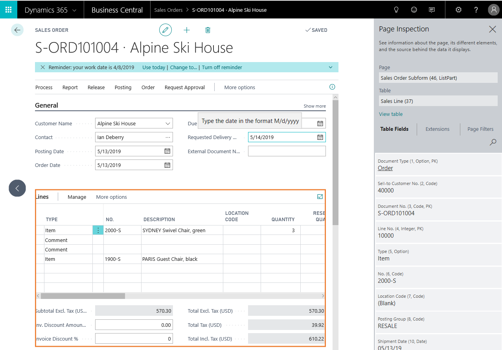

Inspecting Pages in Business Central
The page inspection feature enables you to get details about a page, providing insight into the page design, the different elements that comprise the page, and the source behind the data it displays. Page inspection is especially designed for administrators, power users, support personnel, and developers. It is ideal for learning the data model behind a page and troubleshooting. For example, if you are experiencing a problem with a page, you could use page inspection to get information to pass on to your system administrator or support personnel.
Working with Page Inspection
You start page inspection from the Help & Support page. Choose the question mark in the top right corner, choose Help & Support, and then choose Inspect pages and data. Or, you can just use the keyboard shortcut Ctrl+Alt+F1.
The Page inspection pane opens on the side. The following figure illustrates the Page Inspection pane on the Sales Order page.

When the Page Inspection pane first opens, it shows information that pertains to the main page object.
Use the keyboard or pointing device to move focus to different elements on the page. When you select a FactBox or a part on the main page, the bounding area is highlighted by a border, and the Page Inspection pane shows information about the selected element. For example, the previous figure shows information about the list part in the Sales Order page. As you navigate to other pages in the application, the Page Inspection pane will automatically update with page information as you move along.
For more information about what is shown in page inspection, see Inspecting and Troubleshooting Pages in the Business Central Developer and IT Pro help.
If you do not see the details that you expect to see in the Page Inspection pane, you probably do not have the required permissions, as described in the next section.
Controlling Access to Page Inspection Details
As an administrator, you can control access to the full details that are shown in the Page Inspection pane by configuring the permissions that users have. To grant a user permission to the full details, give users Execute permission on the System object 5330. You can grant this permission by using a permission set (such as D365 Troubleshoot) or a user group (such as D365 Troubleshoot). For more information about permissions, see Assign Permissions to Users and Groups.
Users who are not granted permissions on System object 5330 can still access the Page Inspection pane, but they will only see the Page and Table fields, which display basic details that they can pass on to their support team.